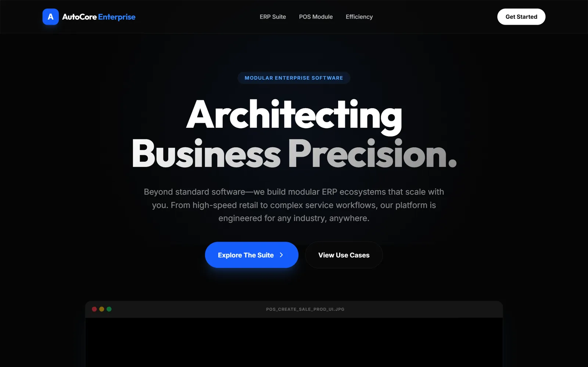
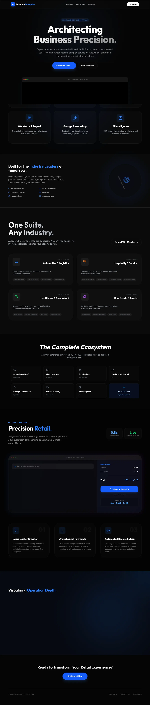

Multi-branch POS
Barcode sales, cash shifts with blind close and thermal receipts.
Multi-branch auto-care businesses · 2025 – 2026
One system for the counter, workshop, stock, purchasing, accounts and payroll of Kenyan auto-care businesses, from a single service station to a four-branch group.

AutoCore runs garages, service stations, car washes and body shops. Cash shifts reconcile per cashier, M-Pesa payments are matched automatically, purchase orders go through approvals and customers get WhatsApp updates while their car is in the bay.
The latest release adds body-repair jobs with a 3D damage map, car-wash memberships, live job tracking for customers and an AI briefing each morning.
Screens are from the AutoCore product site; client systems are private.
Barcode sales, cash shifts with blind close and thermal receipts.
Payment prompts on the customer’s phone and automatic matching.
Job cards, technicians, a 3D damage map and repair estimates.
Purchase orders with approvals, receiving and branch transfers.
Live job tracking with WhatsApp updates.
A morning summary and an assistant for questions about the business.
An inherited codebase had drifted from production.
Reconciled the schema history with the live systems.
Several clients on one product.
Client settings moved into configuration and company profiles; branches consolidated onto one mainline.
